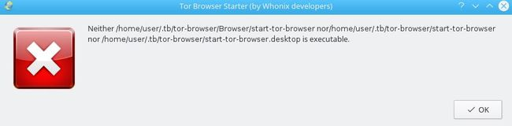
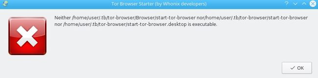

Hallo.
I have this problem. When i start my workstation, i will update my TB! Then I get the following error message!

{kind=link}
Maybe a chmod problem?
Best Regards
ef86

Hallo.
I have this problem. When i start my workstation, i will update my TB! Then I get the following error message!

Maybe a chmod problem?
Best Regards
ef86
What error?
Uploaded images aren’t visible.
(Deliberate forum setting.)
(Visible for mods and admins if you press edit.)
Post edited. Here is a link that works.
Hi ef86
How did you update your torbrowser? Could you please provide the output of both command.
ls -l ~/.tb/tor-browser/start-tor-browser.desktop
ls -l ~/.tb/tor-browser/Browser/start-tor-browser
You might need to make those files executable by running
chmod +x /home/user/.tb/tor-browser/Browser/start-tor-browser /home/user/.tb/tor-browser/start-tor-browser /home/user/.tb/tor-browser/start-tor-browser.desktop
Ahhh ok, thank you Patrick!
Dear HulaHoop. Please excuse that you could not see the photo. My mistake!
ef86
Dear 0brand! Here are the results…
#First -rw-r–r-- 1 user user 1774 Jun 10 22:51 /home/user/.tb/tor-browser/start-tor-browser.desktop #Second -rw-r–r-- 1 user user 12791 May 21 21:03 /home/user/.tb/tor-browser/Browser/start-tor-browser
ef86
Hi ef86
madaidan had the right idea on this. Setting the execute bit on those files should resolve the issue.
Note: sudo is not required.
chmod +x /home/user/.tb/tor-browser/Browser/start-tor-browser /home/user/.tb/tor-browser/start-tor-browser /home/user/.tb/tor-browser/start-tor-browser.desktop
Dear 0brand get this…
chmod: cannot access ‘/home/user/.tb/tor-browser/start-tor-browser’: No such file or directory
ef86
Dear madaidan, get this, when i push the TB Button!
hxxp://i64.tinypic.com/27y7ec7.jpg
ef86
I’m not sure what that error is. I’ve even checked the source for the exit code “126” and couldn’t find anything.
Maybe @Patrick knows something?
Der madaidan. Ok, but thank you very much for your support!
ef86
Dear Patrick. Ahhh ok, that`s the Problem. But what should i do now? Does it give a workaround that i can do?
Best Regards
ef86
madaidan via Whonix Forum:
I’m not sure what that error is. I’ve even checked the source for the exit code “126” and couldn’t find anything.
http://tldp.org/LDP/abs/html/exitcodes.html
126 Command invoked cannot execute
example: /dev/null
Permission problem or command is not an executable
Please provide the output of the following for debugging.
ls -la ~/.tb/tor-browser/start-tor-browser.desktop ; \
ls -la ~/.tb/tor-browser/Browser/start-tor-browser ; \
ls -la ~/.tb/tor-browser/Browser/start-tor-browser.desktop
And then try this fix.
chmod +x ~/.tb/tor-browser/start-tor-browser.desktop ; \
chmod +x ~/.tb/tor-browser/Browser/start-tor-browser ; \
chmod +x ~/.tb/tor-browser/Browser/start-tor-browser.desktopYou can also try this:
sudo chown --recursive user:user /home/userOhh. I thought the exit code was something implemented in tb-starter rather than bash itself.
For debugging! All three only give a “<” and nothing else. Than i try the next three for fix. The first two gives an “<”, the third works normal and gives normal output.
After this, nothing changed. Do not work for me!
Best Regards
ef86